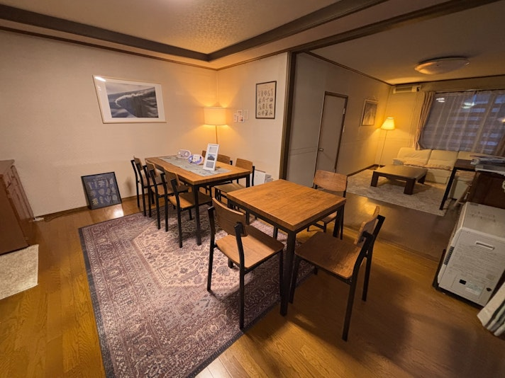
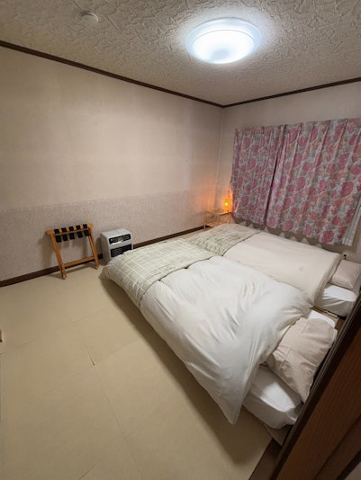
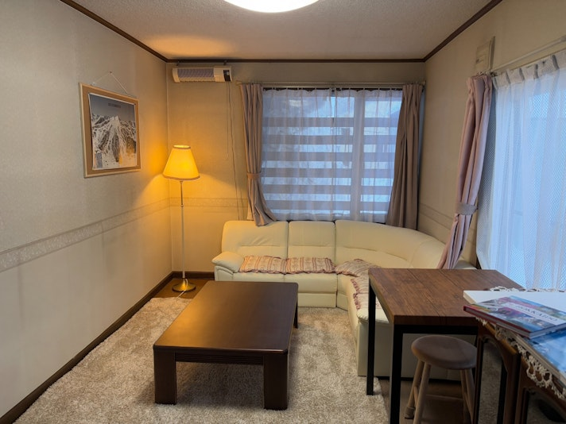
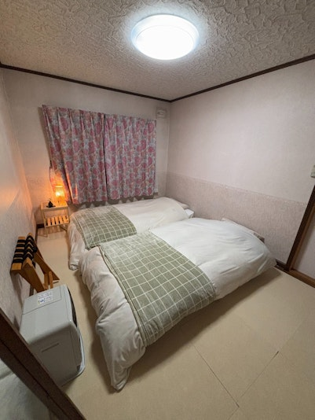
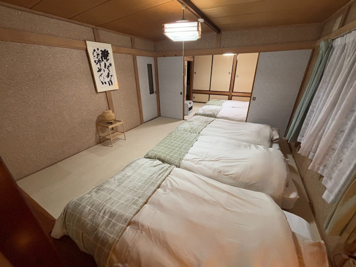
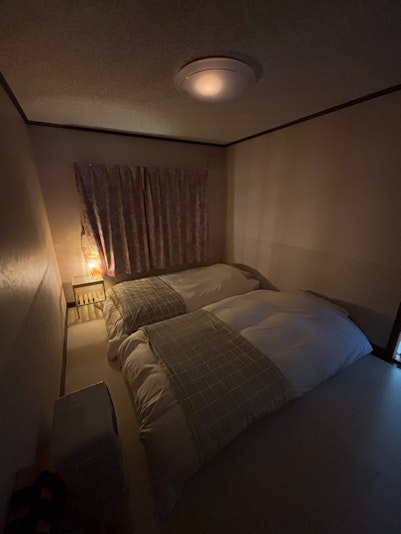

雪山・アクティビティ
冬季のスキー、スノーボード、雪景色を楽しむ旅程に合わせて紹介します。

About
グループ旅行、スキー・スノーボード、夏の避暑、長めの北海道滞在まで、旅程に合わせて使いやすい貸切宿として案内します。詳細な定員、寝具、料金、キャンセル条件はBeds24側の最新情報と合わせます。
Beds24
このエリアはBeds24公式プラグイン、埋め込みコード、または外部予約ページへのボタンに差し替えます。
日付、人数、泊数を選んで空室確認に進む想定です。予約、料金計算、決済機能は自作しません。
Gallery
実写真に差し替える前提で、室内の広さ、寝具、水回り、設備が分かる順に配置します。





Amenities
最終公開前にBeds24、OTA掲載情報、現地備品と照合します。
Access
Sightseeing
冬季のスキー、スノーボード、雪景色を楽しむ旅程に合わせて紹介します。
滞在中に立ち寄りやすい温泉、飲食店、買い出しスポットを整理します。
夏の避暑、羊蹄山周辺、ドライブなど季節ごとの過ごし方を提案します。
FAQ
予約確定後の案内に合わせて掲載します。セルフチェックインの場合も、写真付きで迷いにくい案内にします。
Beds24またはOTA側の最新条件と整合させます。ページ上では概要のみ掲載し、予約画面で最終確認します。
雪道、駐車、除雪状況など、現地確認後に案内を追加します。